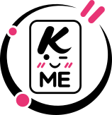
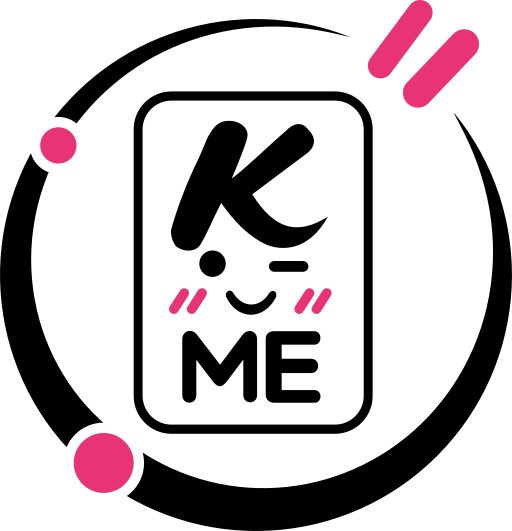
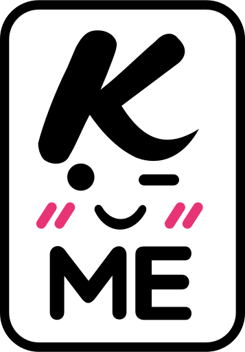

Los logos se insertan directamente, sin recuadro, fondo o borde añadidos por la página. El blanco interior del sello forma parte del diseño. Esta página permite comprobar los mismos archivos SVG, PNG y WebP sobre tres fondos.


